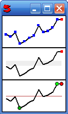

(data = #(), valField = '', width = 128, height = 64,
inside = 8, thick = 2, pointLineRatio = 1.2,
rectangle = true, middleLine = false, allPoints = false,
firstPoint = false, lastPoint = true, lines = true,
minPoint = false, maxPoint = false, normalRange = false,
borderOnPoints = false, circlePoints = false)
Create a control used to draw a Sparkline graph inside a window. Sparklines are small but useful graphic charts which describes the trend of a value.
The data argument can be:
#(2, 5, 9, 14, 12, 7, 9, 30)
The width argument is the width, in pixel, of the graph.
The height argument is the height, in pixel, of the graph.
With the inside argument you can specify a border frame, in pixel, inside the rectangle of the graph area.
With the thick argument you can specify the line tickness in the graph.
With pointLineRatio you can specify then ratio between the point thickness and the line thickness.
If rectangle is false, the rectangle around the graph area will not be drawn.
If middleLine is true, a reference line will be drawn in the center of the graph.
If allPoints is true, you will see all the points in the graph.
If firstPoint is true, you will see the first point in the graph.
If lastPoint is true, you will see the last point (a red point) in the graph.
If lines is false, you will not see the lines between the points in the graph.
If minPoint is true, you will see the minimum value (a green point) in the graph.
If maxPoint is true, you will see the maximum value (a light green point) in the graph.
normalRange should be an object holding the range (minimum and maximum) of normal values for the graph. For the normal range there will be a gray bar in the graph. Points inside this gray bar represent desiderable values.
If borderOnPoints is true, you will see a black border around the points.
If circlePoints is true, you will see round points instead of square points.
For example:
Window(
#(Vert
(Sparkline
(10, 8, 12, 2, 4, 7, 9, 18, 12, 13, 16, 23, 23)
allPoints: true
)
(Sparkline
(10, 8, 12, 2, 4, 7, 9, 18, 12, 13, 16, 23, 23)
normalRange: (10, 15)
)
(Sparkline
(10, 8, 12, 2, 4, 7, 9, 18, 12, 13, 16, 23, 23)
circlePoints: true, pointLineRatio: 2
minPoint: true, maxPoint: true,
middleLine: true, borderOnPoints: true
)
)
)
Would display:
See also: BulletGraphControl